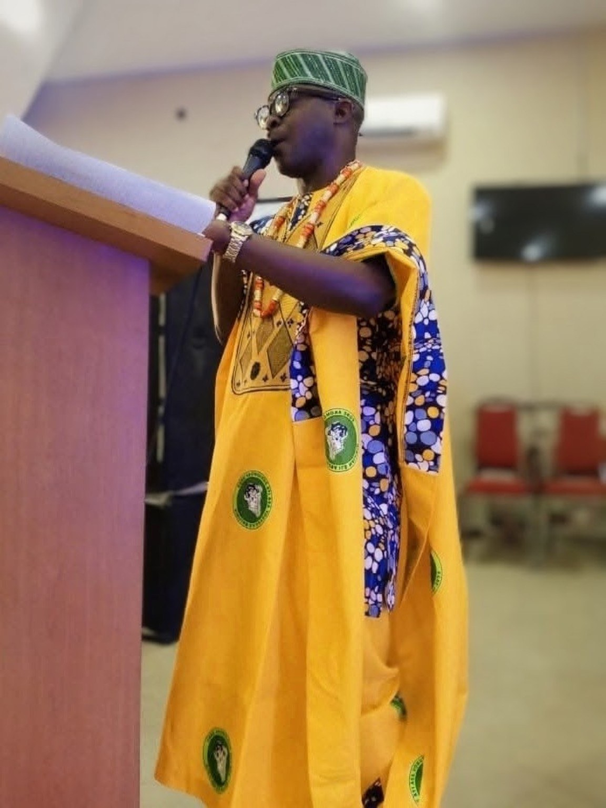
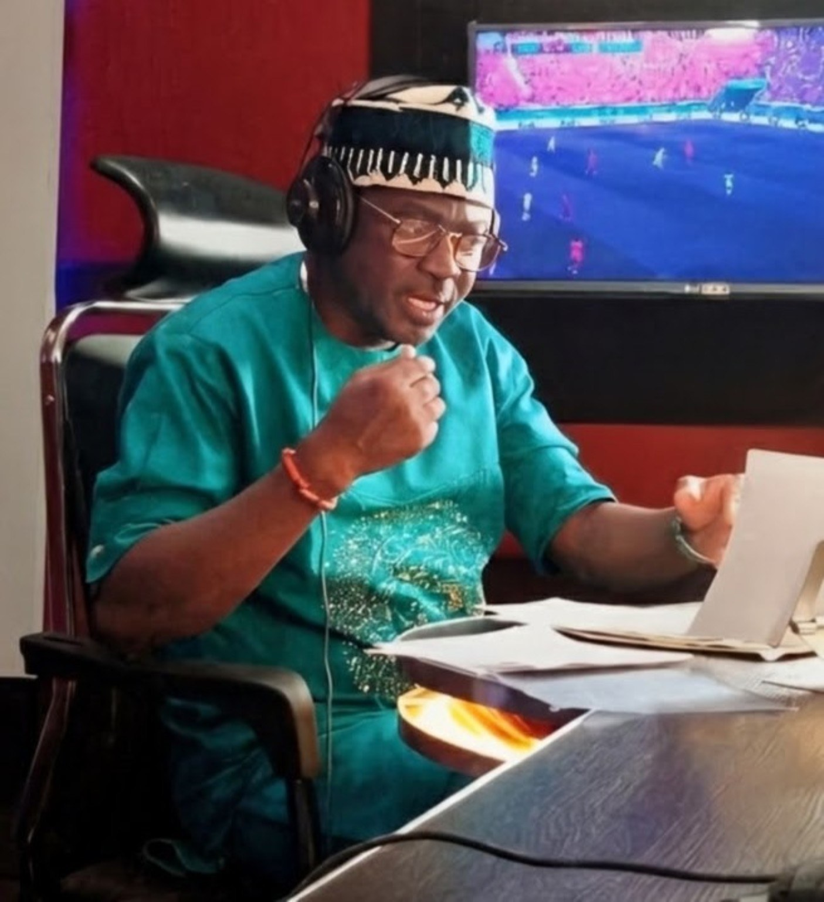
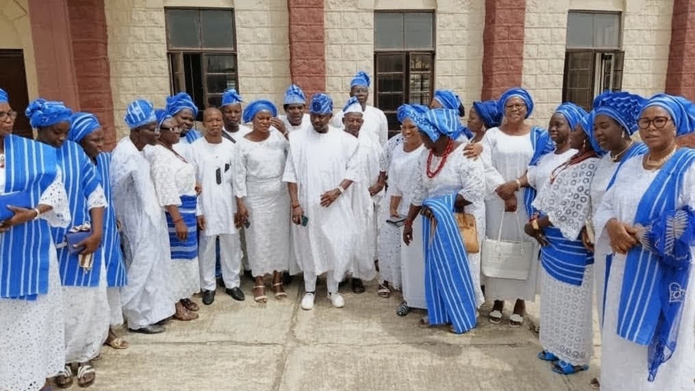
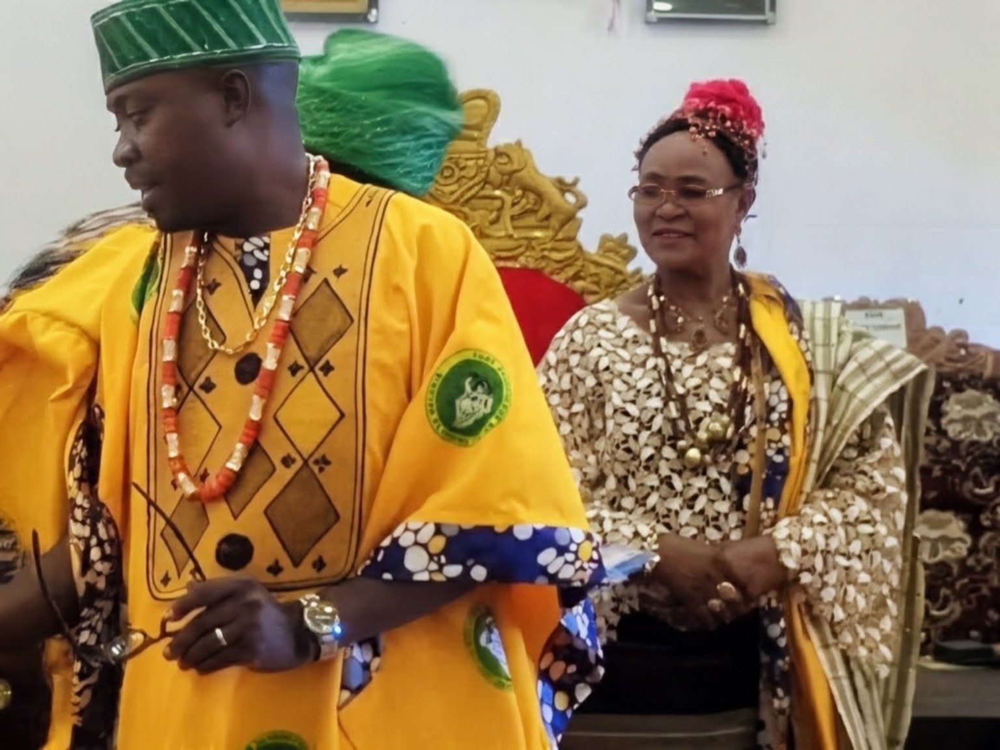

Empower
Equip young people and communities with practical skills, confidence and opportunity.
United Kingdom · Nigeria · Global impact
Akogun Muyiwa Akinrelere (AMA) Foundation brings together community service, media, culture, education and creative development.
Equip young people and communities with practical skills, confidence and opportunity.
Protect Yoruba language, history, oral traditions and indigenous knowledge.
Use broadcasting, film and storytelling to bring community voices into public view.
Who we are
AMA Foundation connects humanitarian service with media, culture, education, creativity and enterprise. We develop people, strengthen communities and create platforms through which African stories, values and opportunities reach wider audiences.
Our motto, “Bẹ́ẹ̀ la ń ṣe”, speaks to a way of serving with humility, compassion and selfless action.
Our structure
Each area contributes to social impact, cultural renewal and practical opportunity.
Preserving traditions, language, history, festivals and oral memory.
Promoting learning, media literacy, personal development and mentorship.
Supporting welfare, outreach and sustainable grassroots initiatives.
Building skills, confidence, opportunity and responsible leadership.
Producing programmes that inform, educate and inspire positive change.
Creating films and digital content that preserve culture and tell our stories.
Flagship programmes
Designed for phased delivery in the United Kingdom and Nigeria.
Practical training in broadcasting, podcasting, journalism, filmmaking, editing, public speaking, AI-assisted media and entrepreneurship.
Documenting oral histories, festivals, language, Ifá knowledge and elders’ voices.
Mentoring young people in storytelling, digital skills and responsible content creation.
Recognising ethical, innovative and community-centred creative achievement.
Connecting broadcasters, educators, cultural custodians and community organisations.

The founder
Olumuyiwa Akinrelere is a broadcaster, filmmaker, media consultant and cultural advocate committed to community transformation. His work brings together public communication, African cultural heritage, education, creative production and service.
Through AMA Foundation, he seeks to train future media professionals, preserve Yoruba heritage, support community broadcasting and build practical partnerships between the United Kingdom and Nigeria.
“Together, we can shape a legacy that lives on.”
From the community
Moments from broadcasting, cultural engagement and community gatherings.



AMA TV · Digital broadcasting
AMA TV is the digital broadcasting and multimedia subsidiary of AMA Foundation & Media: a platform celebrating African heritage, Yoruba culture, education, entertainment, community development and inspiring conversations.
Watch our featured video and follow AMA TV for new stories and programmes.
Latest stories
Loading AMA TV stories…
Support the mission
We welcome partners, donors, volunteers, educators, media professionals, cultural custodians and community organisations.
Contact AMA Foundation
United Kingdom
Ipswich, IP2 9DP
Telephone
+44 7771 102073
+234 803 380 3985